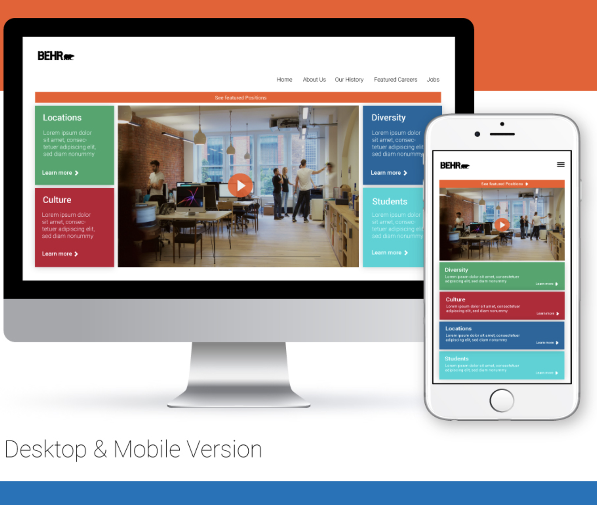
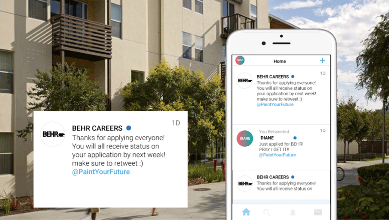

Behr has a problem attracting millennials to their workplace. As Millennials becoming a larger workforce than Baby Boomers, my internship consisted of finding a solution!
I noted down some questions I felt would help me reach the right path on my project. I wanted to understand if Human Emotion could be used to create a unique experience since job hunting is emotionally draining.
These statistics show Millennials are a big chunk of the total users on these platforms. After taking this into consideration, I asked myself: If Millennials use these apps and carry them in their pockets everyday, at what point do these platforms become an extension of their life? Can these same characters be applied to on an application process at Behr?
I created a Persona a to better understand the new recruitment process in mind.
Diane is a junior in college and lives on-campus. In other words, there is always something new and exciting going on and she never misses a moment to capture something funny on snapchat. Majoring in engineering, she is interest in the field but like most college students doesn’t quite know what she wants yet. She promised herself she would get an internship this summer to see the real world for herself.
One day, as Diane is walking to class, she notices an aesthetic view by the parking lot. Realizing how great this would make her Snapchat Story, she took a snap (picture). While scrolling her school’s Geo Filter, she notices Behr’s Geo-Filter. She never heard of Behr and wasn’t aware of who they are so she looked them up on Linkedin to learn more. She liked what she saw and followed them on Snapchat.
When she got to class, she started looking at Behr’s Snap Story. She saw how happy the employees looked and wanted to see more. One of the snaps on Behr’s story had an Instagram post. She looked Behr up on instagram and was happy to see aesthetic photos of their offices and how happy the employees seemed to be.
“I want to be part of that”, she said.
Diane then goes to Behr’s career site on her iPhone and spots the internship section. She wants to apply but is hesitant because she doesn't even know what she wants to do. As she scrolls down the web page, she is happy to see a section displaying what each department does. Continuing down the page she reads about interns’ time at Behr. She makes up her mind and applies to a R&D Internship. She even sees all the social platforms Behr is active in and follows them on Twitter.
2 weeks past and still no word on her application. She tells herself, “Looks like I won’t hear back for months like the others.” As she walks to her dorm, she receives a Tweet from Behr prompting that all applications have been submitted and status updates will be sent next week. She is beyond excited that she heard back from them. Even though the tweet was sent to everyone, she feels as if Behr actually cares about her application.
After 2 interviews Diane gets an offer and joins Behr that summer! This User Story shows how social platforms can be used to create a more millennial friendly recruitment process! I am very glad I was able to answer some of my initial questions and learn about the importance in understanding Human Emotion in order to create the right UX Solution.